Retos inminentes
-
Envejecimiento de la población
Europa se acerca a un cambio demográfico. Entre otras medidas, debemos prepararnos con políticas de envejecimiento activo que puedan mejorar la vida de las familias que tengan algún miembro con problemas para desarrollar su actividad diaria..
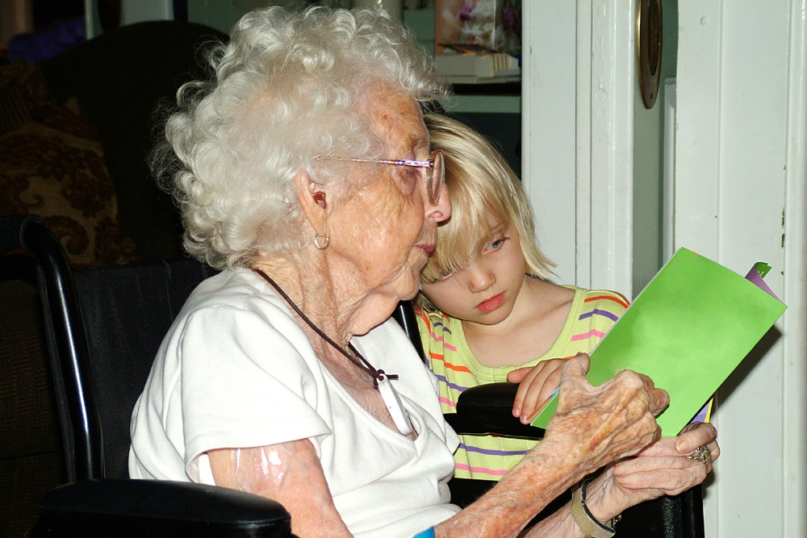 -
Enfermedades neurodegenerativas
A nivel mundial, 47.6 millones de personas tienen demencia y hay 7.7 millones de casos nuevos cada año. El Parkinson afecta a más de 10 millones de personas en el mundo.
Discapacidades
Un 10% de la población mundial nace con alguna discapacidad. Algunos nacen con discapacidades que les dejan en desventaja en una sociedad no inclusiva. Otros desarrollan la descapacidad a lo largo de su vida, por motivo de algún accidente o alguna enfermedad. Pueden y quieren sentirse capaces.
Las tecnologías asistivas al rescate
-
Los avances científicos, en lo que a enfermedades neurodegenerativas se refiere, tienen un avance lento, especialmente por lo errático en la financiación de la investigación básica. Las tecnologías asistivas no son una solución, pero pueden hacer la vida más llevadera a quien tiene alguna enfermedad y pueden integrar mejor a la sociedad a los que tienen alguna discapacidad.
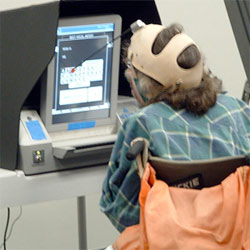 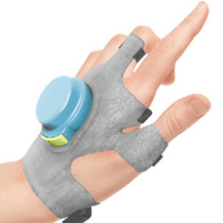 -
Estas tecnologías consisten en la integración de elementos electrónicos en nuestro ambiente cotidiano de tal forma que nos permitan complementar o mantener nuestra calidad de vida. Dichos elementos podríamos llevarlos puestos sobre el cuerpo o en nuestra ropa (wearables) o bien ser elementos de asistencia mecánica, como robots o elevadores.
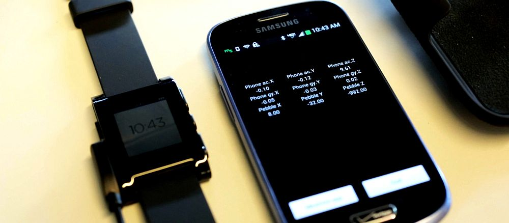
Estas tecnologías ayudan en el corto plazo, pero no son la solución perfecta
-
Desarrollo demasiado caro
Un producto empieza por una idea que se prototipa en laboratorio. Luego se trabaja con voluntarios o personas a las que se les compensa de alguna manera el esfuerzo. De esta experiencia, se aprende y se rediseña el producto. Después se planifica y ejecuta la producción industrial. Sólo queda llevar el producto al cliente final. En todo este proceso, hay un gasto ingente de recursos materiales y humanos. No todo el mundo puede afrontarlo.
-
No es sencillo involucrar a las personas
Muchos proyectos fracasan por no proponer una solución de interés para las personas que los usarán. Para evitar esa frustración, se está integrando a voluntarios en la creación de los productos. Ello encarece más el producto, ya que requiere de instalaciones donde hacer las pruebas y de compensaciones para los voluntarios por el esfuerzo realizado. Aparte, plantea nuevas cuestiones. Imaginemos que construimos un detector de caídas: ¿pediremos al voluntario que se caiga?, ¿detectará el producto una caída por una escalera?...
-
Las tecnologías no están todavía listas
Los ensayos son lentos porque hay que garantizar fiabilidad. Además, gran parte de lo que se necesita implica asistencia mecánica, por ejemplo, cuando alguien se cae, para que le ayude a levantarse.
-
Falta de personalización
Cada persona es un mundo. Ajustar la tecnología asistiva a su caso particular es un proceso costoso. Los modelos industriales se rigen por la producción en escala de productos totalmente iguales. Cuando se trata de colectivos pequeños, o relativamente pequeños, no se pueden producir medios de precio asequible ajustados al problema de cada uno.
¿Qué proponemos?
Paso 5
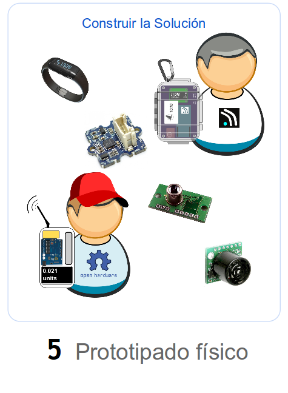Una vez que sabemos lo que se quiere construir, usamos elementos electrónicos asequibles para montar prototipos que puedan probar voluntarios. A diferencia de otros enfoques, cuando llegamos a aquí: no hemos invertido recursos físicos más allá de nuestro esfuerzo y nuestros ordenadores (que ya teníamos), hemos cooperado con profesionales y usuarios para determinar que vamos por el buen camino, hemos respetado la privacidad e integridad de los usuarios sin que ello comprometa el proyecto.
Paso 4
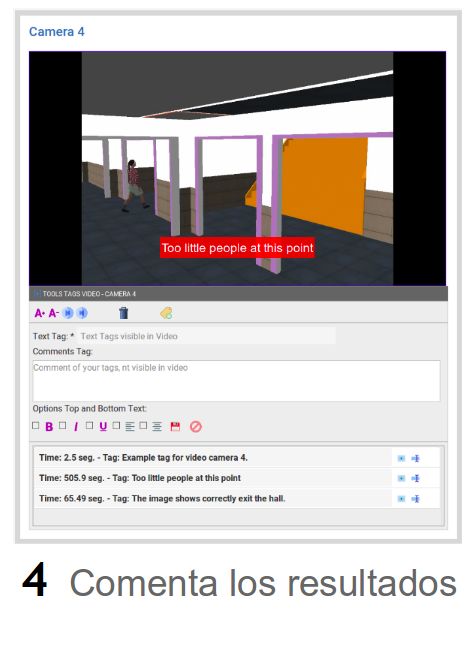El resultado final se vuelve a comentar para determinar si lo que los tecnólogos crearon encaja con lo que se esperaba.
Paso 3
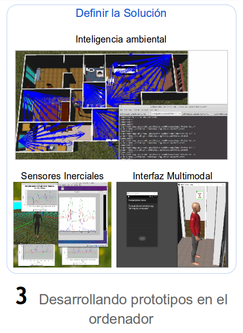Ahorramos costes creando prototipos primero en el ordenador. Su funcionamiento se compara con el esperado por los profesionales y personas interesadas. El resultado se traslada en forma de vídeo para que se compruebe otra vez.
Paso 2
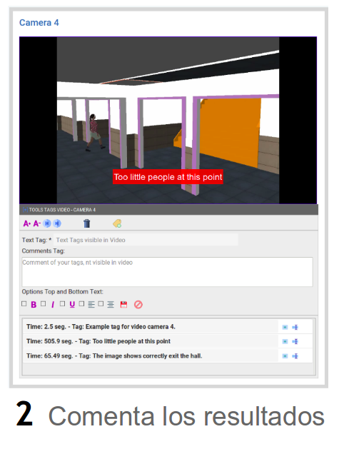Los comunicación se canaliza mediante una herramienta de comentarios similar a las herramientas que se usan para poner subtítulos a las películas. Aquí se modelan qué comportamiento se espera de los actores en un escenario ideal y luego se procede a definir cómo cada acción se ve alterada por las discapacidades o las enfermedades.
Desarrollos terminados
-
Un detector de caídas
Fue desarrollado por estudiantes y la tecnología utilizada sirvió para facilitar el prototipado inicial de la solución. Está disponible toda la documentación que informa de los elementos necesarios para el desarrollo y así poder construir otro similar.
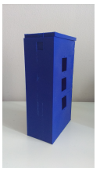 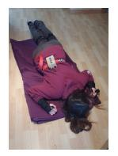 -
Prototipos de reconocedores de situaciones
Un reconocedor de gestos básico (su evolución está en proceso de patente) y un detector de caídas en grandes instalaciones. Desarrollado usando las simulaciones y producido con hardware abierto. Obtuvo el premio a la mejor DEMO patrocinado por IBM en la conferencia PAAMS 2016.
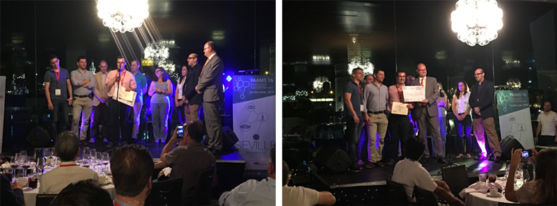
Algunos desarrollos en progreso
-
Mando de televisión tolerante a temblores leves
Se trata de definir cómo sería el control de un mándo de televisión táctil que fuera tolerante a temblores leves del usuario.

Monitor de actividades repetidas u olvidadas
Basado en tecnología para reconocimiento de actividades, se quiere desarrollar un sistema que aprenda las costumbres del paciente y que identifique cuándo una actividad ya ha sido realizada, o no ha sido realizada, o cuando ha sido dejada a medias.
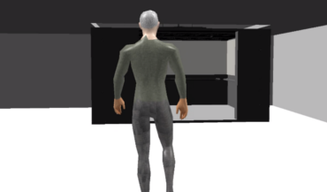 -
Seguimiento de multitudes
Se trata de, usando información de tráfico de gente en un punto concreto de un edificio, determinar cuánta gente hay en otras partes del mismo sin necesidad de invadir la privacidad.
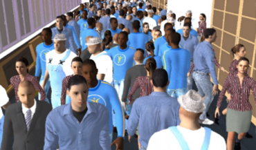
MOSI-AGIL. El programa MOSI-AGIL-CM (S2013/ICE-3019) está financiado por el Gobierno de la Comunidad de Madrid y fondos estructurales FEDER.
FoTRRIS is an European Research Project of the H2020 Programme, on Responsible Research and Innovation. More information at http://fotrris-h2020.eu/
GRASIA Facultad de Informática
All the content of this page is licensed under the CC By-SA
 BY-SA icon")
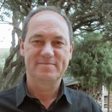Juan Pavón Mestras
Co-director GRASIA
He joined UCM at the end of 1997, where he created the GRASIA research group, whose focus is on the application of multi-agent systems technology.
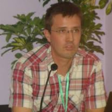Jorge Gómez Sanz
Co-director GRASIA
His PhD introduced the INGENIAS methodology for the development of Multi-Agent systems, which has been widely cited. He is the co-director of the GRASIA research group.
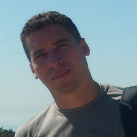Marlon Cárdenas
Miembro de GRASIA
Estudiante de doctorado con un contrato FPI asociado al proyecto ColoSAAL.
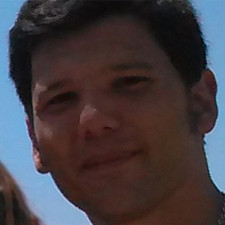Rafael Pax
Miembro de GRASIA
Actualmente trabaja en la Universidad Complutense de Madrid (UCM) en el proyecto MOSI-AGIL.
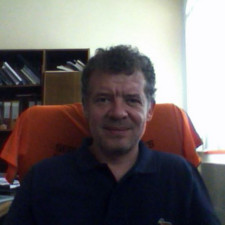Andres Arias Astray
Facultad de Trabajo Social de la UCM
Actualmente trabaja en la Universidad Complutense de Madrid (UCM).
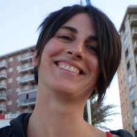Gracia Escalante Ruíz
Facultad de Trabajo Social de la UCM
Actualmente trabaja en la Universidad Complutense de Madrid (UCM).
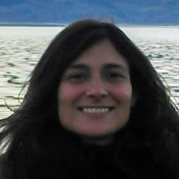Linda Ducca Cisneros
Facultad de Trabajo Social de la UCM
Actualmente trabaja en la Universidad Complutense de Madrid (UCM).
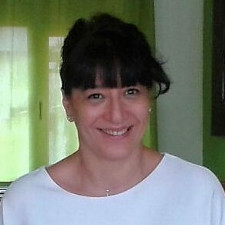Silvia Patricia Cury
Universidad Internacional de la Rioja
Actualmente trabaja en la Universidad Complutense de Madrid (UCM).
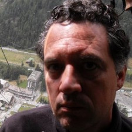Millán Arroyo Menéndez
Miembro de GRASIA
Profesor Titular de la Universidad Complutense de Madrid, Vicedecano de Investigación y Doctorado.